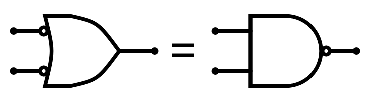
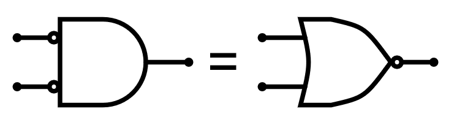
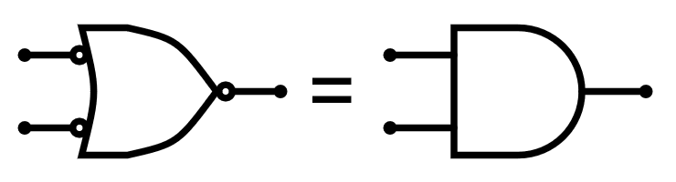
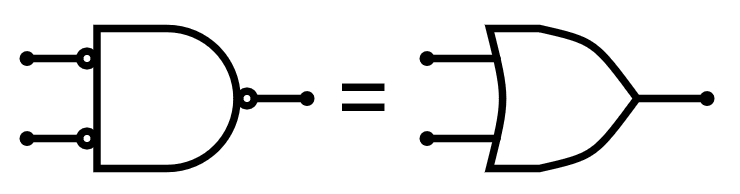
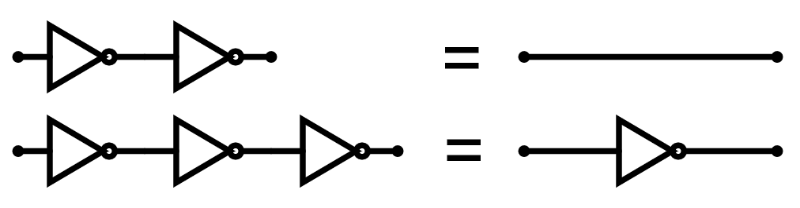

9. De Morgan's laws¶
The laws of Augustus De Morgan or simply the De Morgan laws are two transformation rules that allow exchanging AND gates and OR gates simply by negating or inverting the inputs and outputs:
{kind=link}

OR transformation with negated inputs in NAND.¶
{kind=link}

Transformation of AND with negated inputs into NOR.¶
In the form of a logical formula the expressions would be:
Another way of expressing De Morgan's laws is:
An OR gate with all its inputs and outputs inverted or negated is equivalent to an AND gate.

Transformation of an all-negated OR gate to an AND gate.¶
An AND gate with all its inputs and outputs inverted or negated is equivalent to an OR gate.

Transformation of an all-negated AND gate to an OR gate.¶
{kind=link}
{kind=link}
Double negation¶
We must remember from the section dedicated to the NOT gate, that a double negation cancels out, resulting in a line without negation:
{kind=link}

A double negation cancels each other.¶
Knowing De Morgan's laws and this last law, we can always exchange any OR gate for an AND gate and vice versa, regardless of the inputs and outputs it has denied.
Simulation¶
In the following simulation we can see the operation of De Morgan's laws in several circuits.
As the input values to the following logic gates change, the top gate always outputs the same value as the bottom gate, proving that they are equivalent.
Exercises¶
- Explica con tus palabras qué dicen las dos leyes de De Morgan.
- ¿Qué función lógica sería equivalente a cinco puertas NOT en serie?
- Check in the previous simulation that the upper door has the same output as the lower door in each of the 4 circuits that appear.
- Transform the following logic gates to use the alternative gate according to De Morgan's laws.
{kind=link}
{kind=link}